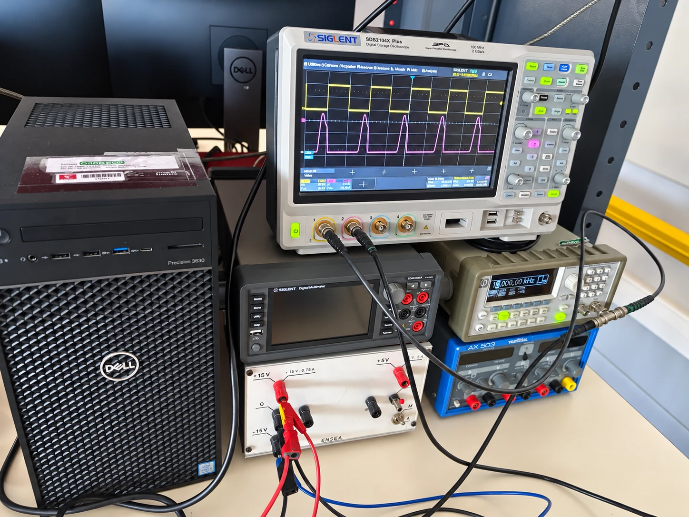
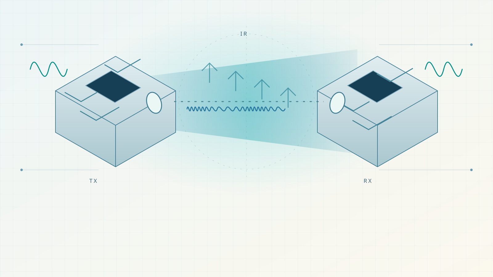

03 / ENSEA · Second year · Team project
Infrared speaker.
Sound, without wires.
In progress · Optical block testing
Supplied photographs, reoriented and retouched for presentation. Values and conclusions come from the test account.
The essentials
The project in 30 seconds
- Objective
- Transmit two audio channels over infrared and reproduce them through two speakers. Final range target: about 10 m.
- Technologies
- Analogue electronics · IR LED · transistor · TL081 · FM / VCO / PLL studies · PSpice.
- Personal contribution
- Participation in the study and testing of analogue blocks within a second-year ENSEA team project.
- Current result
- Initial transmitter/receiver tests observed at 10 kHz. The received waveform is distorted; complete stereo audio transmission remains to be validated.
My contributionAnalogue studies and bench tests, within the team.
I take part in the analogue-block studies and tests in this second-year ENSEA team project. The project has a planned framework of approximately 90 hours.
- Participate in studying the transmitter and receiver blocks: transistor-driven LED and op-amp reception.
- Compare the command and received response in the initial 10 kHz optical test.
- Contribute to the FM / VCO / PLL study and preparation for the next measurements. Complete stereo audio remains an objective.
Contents01 · Objective
A second-year ENSEA team project within an approximately 90-hour planned framework. We work block by block: understand the circuit, run a simple test, observe the response, then decide what to measure next.
Context and the proposed signal path
The objective
Transmit two audio channels over infrared and reproduce them through two speakers. Final range target: about 10 m.
The approach
We studied XR2206 and HC4046 VCOs and TL081/TL082 operational amplifiers, and started a PSpice representation. The initial transmitter and detection tests are the current work; audio FM, PLL demodulation and stereo integration come next.
My role
I contribute to the study and testing of analogue blocks within the team. The hardware shown consists of ENSEA teaching boards used to investigate behaviour before integrating the system.
- 01Audio / adaptation
- 02VCO / FM modulation
- 03Transistor / IR LED
- 04Sensor / current-to-voltage
- 05PLL / audio recovery
- 06Power amplifier / speaker
Intended architecture for one channel. The second channel will use a distinct carrier; the complete chain is not yet validated.
OPTICAL LINK / WORKBENCH NOTES
A signal, carried by light.
Before transmitting music, the team checks a simpler link: a square control signal drives a transistor, the optical path carries the variations, and the receiving stage detects them. Try interrupting the path.
The path is clear. Start the sequence or place an obstacle.
Switch the current
The transistor controls the LED drive. A series resistor limits its current.
Cross the optical path
A clear, aligned path helps direct light reach the sensor. Place an opaque obstacle to interrupt it.
Detect and amplify
The photosensitive component feeds the TL081 receiving stage. The exact circuit and its distorted response still need investigation.
Slowed educational illustration, with relative levels and optional interface sounds. It reproduces neither the oscilloscope measurement nor the actual propagation delay. The photographed bench test is at 10 kHz; the planned 45 kHz carrier, FM audio, stereo operation and 10 m range remain to be validated.
Signal lab / Educational model
See frequency change.
In FM, the signal being transmitted changes the frequency of a carrier. Its amplitude stays constant. Move the two sliders: the oscillations bunch together and spread apart, while the green curve represents the original signal.
Sinusoidal FM model: constant amplitude, varying frequency.
+ More information / Understanding FM
A carrier oscillates around a mean frequency fᶜ. The useful signal moves its instantaneous frequency around that mean: closely spaced cycles represent a higher frequency, and wider spacing represents a lower frequency. Here the carrier amplitude stays equal to 1; the β slider controls the modulation index, not that amplitude.
For a sinusoidal signal: s(t) = sin(2π fᶜ t + β sin(2π fᵐ t)).
Frequencies use relative units. The carrier is 16; maximum deviation is β × fᵐ. The eight notes played by “Hear the principle” are an audible illustration of frequency changes.
This demonstration explains the FM principle. It does not reproduce the circuit components, actual frequencies, stereo link or PLL. The infrared project remains in progress; these curves do not establish any additional experimental result.
Results / evidence
A received response. A waveform to understand.
At 10 kHz, the square command was accompanied by a distorted, pulse-like received response. This first optical observation is the starting point for diagnosis; stereo audio and PLL recovery remain to be validated.
Results come from the supplied test account. Possible bandwidth, RC, coupling and saturation explanations remain hypotheses. The 45 kHz carrier and roughly 10 m range are targets.
Read the observation and diagnostic questionsProject status
In progress: measure before integrating.
- Status
- Ongoing team project; initial optical blocks under test.
- Current advancement
- First 10 kHz transmitter/receiver observations, analogue component studies and the start of a PSpice representation.
- Next step
- Record the actual schematic and component references, then compare received amplitude and shape across frequency, distance and orientation.
Next steps / In progress
Build the next stage, one measurement at a time.
The elementary optical link is the starting point. A stereo speaker system remains the goal; these steps still need to be completed and checked.
Record actual schematics and component references.
Measure LED current, gain, offset and received response at 10 → 20 → 30 → 45 kHz.
Test distance, alignment and interruption of the optical path.
Choose audio bandwidth, deviation and two carriers using Carson’s rule.
Integrate VCO and PLL, recover one audio channel, then extend to stereo.
Validate speaker amplification, remote volume control and final range.
Still to be dimensioned
Choose carriers around the audio bandwidth.
45 kHz is a proposed frequency. To validate it, we need to select audio bandwidth and frequency deviation. Carson’s rule estimates the occupied bandwidth: B ≈ 2(Δf + f_audio,max). The two channels will need separated bands and suitable filters.

Let’s build something useful.
I’m looking for a four-month internship in aerospace, electronics or embedded systems from late April to late August 2027.